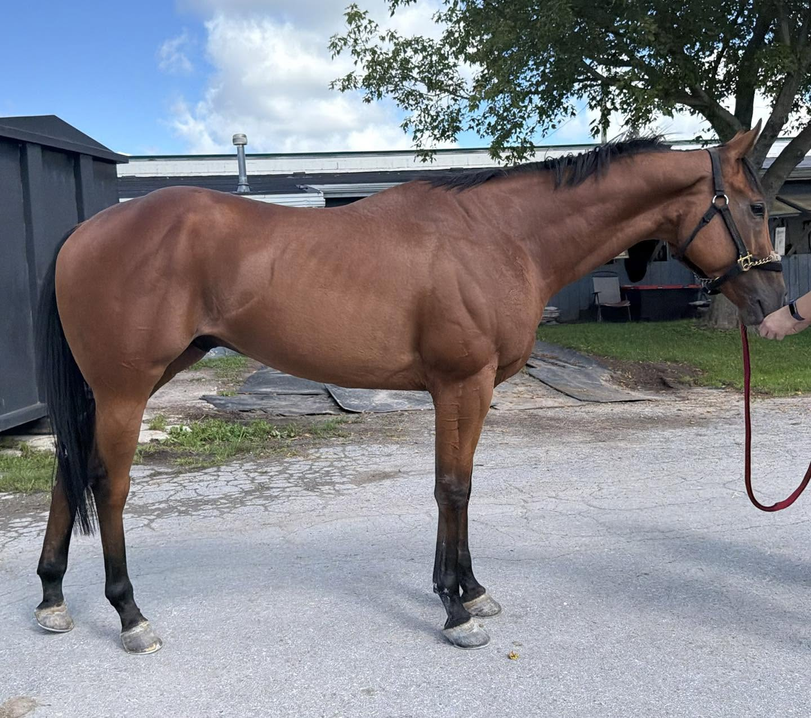
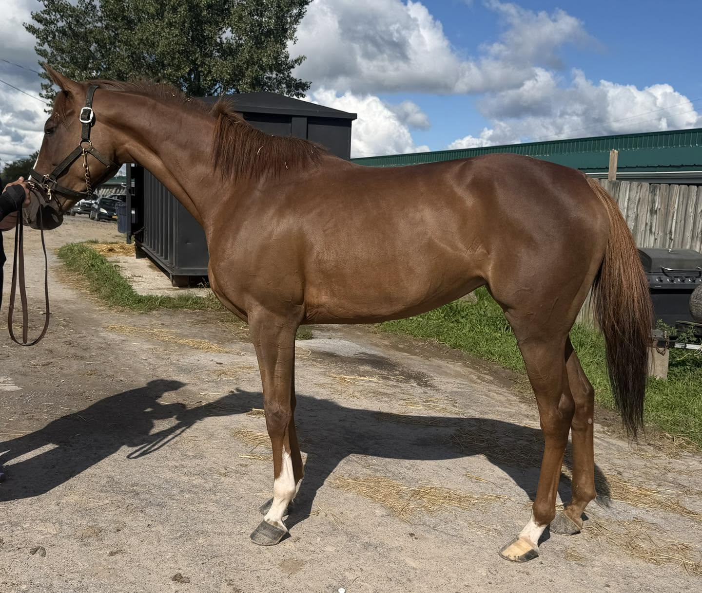
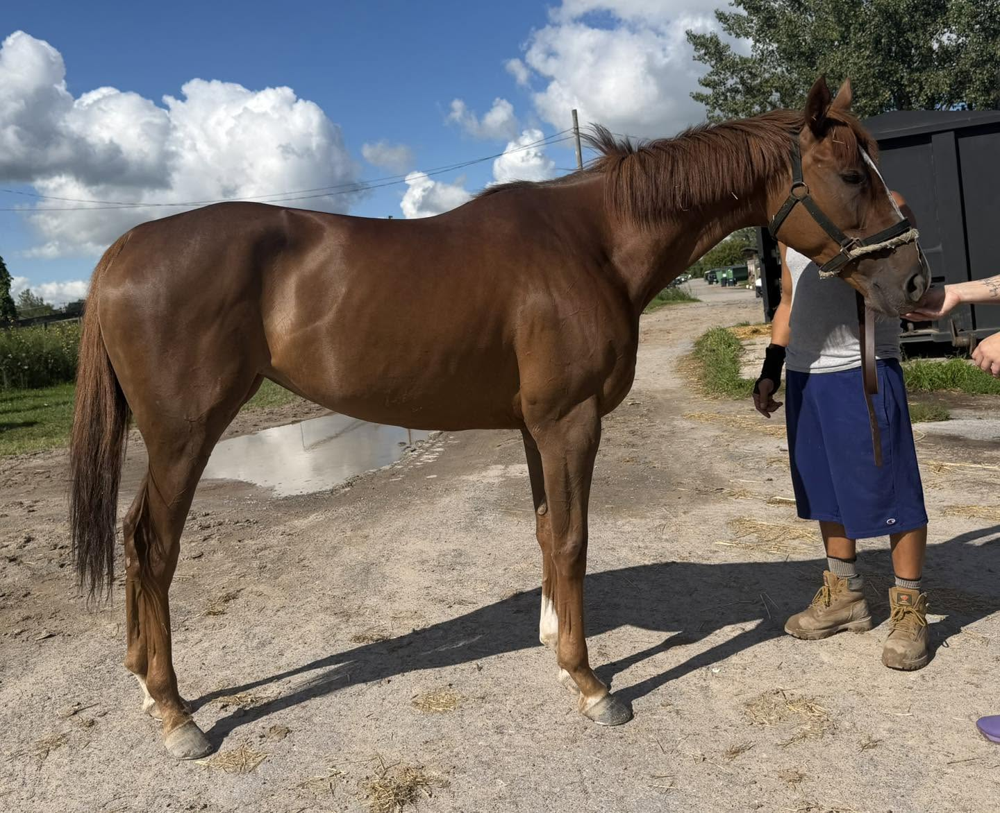
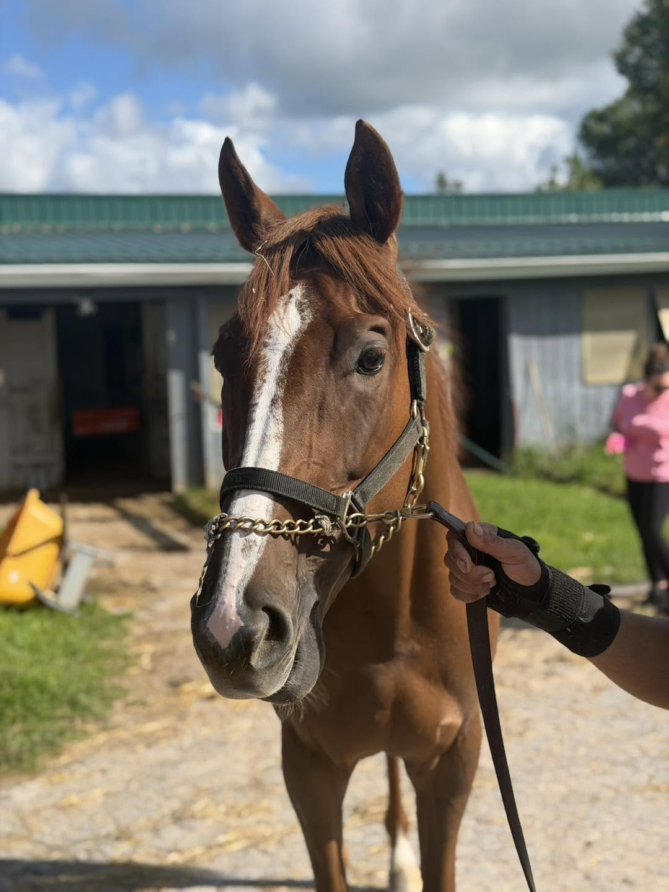
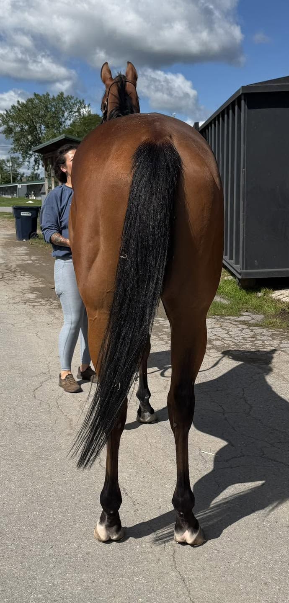
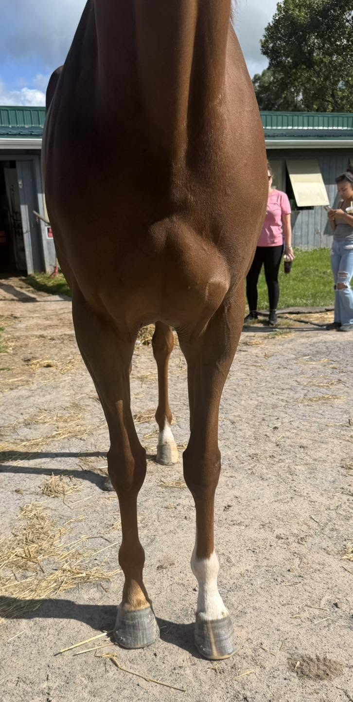
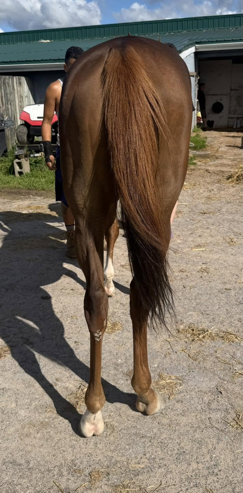

SECORD, 2021 15.2h chestnut filly
Located at Finger Lakes Race Track, Farmington, NY
This cutie patootie stole our volunteer's heart with her adorable, sweet personality, her cute toe flicking movement, and her smarts. After enjoying a peppermint from her handler, she turned to our volunteer's open shoulder bag and started softly nuzzling through it in search of more mints. We were laughing as she delicately picked up two pens and moved them out of the way, then came up with a wrapped mint that we did not even know was there, which she sweetly dropped into our hands so that we could unwrap it for her. Now that is one smart and kind girl who deserves all the treats she can find! Secord was described as very sweet and laid back, sound, a pleasure to handle with no vices, and an easy horse on the track who is good to ride. She jogged politely on a loose lead, showing off a huntery toe flicking trot. What she lacks is racing ability — while she tries, and has earned some 2d, 3rd and 4th place finishes, she has yet to win in 24 starts. That may reflect her pedigree, which is built to run long distances on the grass, not to show speed in the dirt sprints that proliferate at Finger Lakes. Earlier in her racing career, when she was at a track that offered turf and synthetic surface races, she had her best performances. Horses that are bred to run long on the turf, and who have shown a preference for that surface, make the best eventers! Her sire is English Channel, who was a champion running a mile and a half on the grass and has sired not only good turf runners with stamina, but also several successful sport horses who are goo jumpers and good movers. Her dam is by Red Rocks, who won the Breeders' Cup Turf at a mile and a half. And he is by the great Galileo, from the Sadler's Wells line. While her long-distance turf pedigree does not suit Finger Lakes, it sure does suit sport horse disciplines. For those of you who do not need a tall horse, do not overlook this gem of a filly. We can see her as a cute children's hunter or eventer, but with her quiet sweet demeanor she would be happy to take you on trails and cuddle with you, so long as that bag of ours is filled with peppermints!
Price: $2,000 negotiable
Contact: Jose Merced (585) 200-8670






